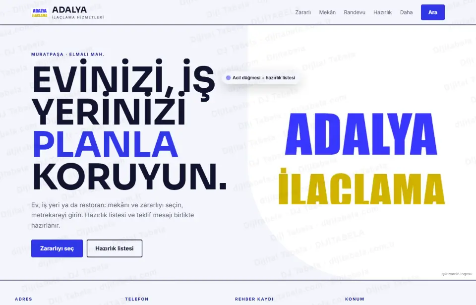
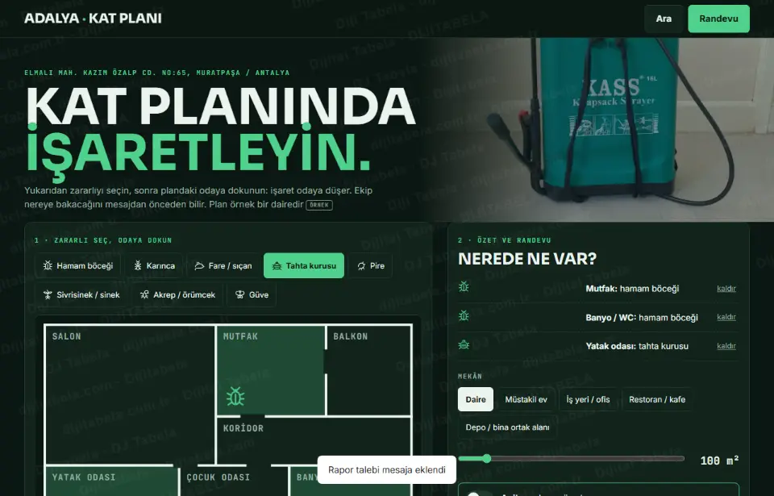
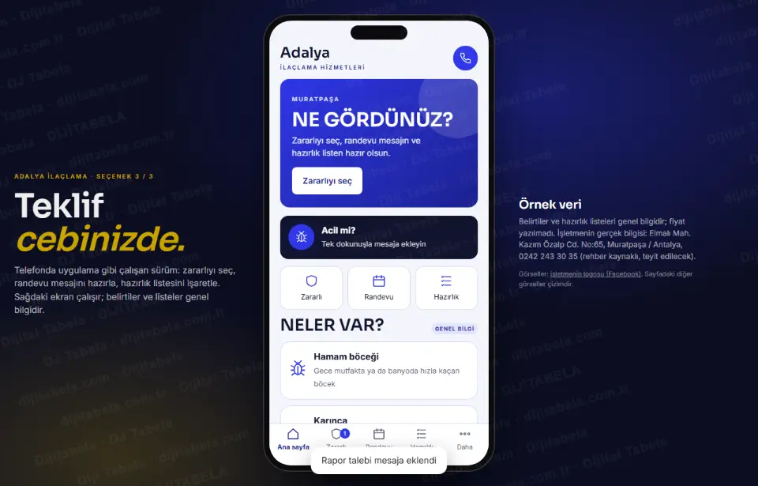

Zararlıyı seçin, mekânı girin, randevu mesajını ve hazırlık listesini alın · 3 tasarım
Adalya İlaçlama’nın herkese açık kaydını inceledik: işletme local.gen.tr rehberinde telefonu ve adresiyle görünüyor (Elmalı Mah. Kazım Özalp Cd. No:65, Muratpaşa / Antalya). Rehber kaydında web alanı boş; kendi sitesi bulunamadı. Müşterinin zararlıyı ve mekânı seçip özetini görebildiği, randevu mesajı hazırlayabildiği ve ilaçlama öncesi-sonrası listesini işaretleyebildiği bir sayfa hazırladık. Üç tasarım da çalışır durumda. Listeler, süreler ve kayıtlar örnektir; bu turda fiyat yazılmadı; işletmenin gerçek bilgisi değildir ve hiçbir mesaj otomatik gönderilmez.

Aydınlık; zararlı kartları, mekân ve m² sürgüsü, randevu ve işaretlenebilir hazırlık listesi.
Kalkan yerleşimi: seçim kartları, canlı özetCanlı aç →
Koyu zeminde tıklanabilir kat planı: zararlıyı seçip odaya bırakın, mesaj odaları da söyler.
Plan yerleşimi: etkileşimli SVG planCanlı aç →
Telefon çerçevesinde uygulama gibi: ana sayfa, zararlı, randevu, hazırlık.
Uygulama yerleşimi: alt menü, sekmeli ekranlarCanlı aç →- Zararlı seçimi: hamam böceği, fare, tahta kurusu, pire, karınca… birden çok seçilir; her birinin sık görülen belirtileri listelenir
- Mekân ve m²: daire, müstakil, iş yeri, restoran-kafe, depo; metrekare sürgüsüyle girilir; özet anında güncellenir
- Randevu: gün ve zaman tercihi; “en kısa sürede” işareti
- Önce / sonra listesi: seçilen zararlıya göre işaretlenebilir hazırlık ve sonrası listesi (genel bilgi; firmanın talimatı esastır)
- Hazır mesaj: zararlı, mekân, m², gün ve notla mesaj üretilir; müşteri kendisi gönderir
- Yeni · periyodik bakım takvimi: aralık seçilir, sonraki 4 tarih görünür, telefon takvimine .ics olarak eklenir
- Yeni · işletme kayıt şablonu: restoran-kafe için örnek uygulama kaydı görünümü, yazdırılabilir
- Yeni · güvenlik soruları: bebek, hamile, evcil hayvan, akvaryum, alerji seçilince ekibe sorulacaklar listelenir
- Yeni · tekrar görülürse bildirimi: tarih, yer, zararlı seçilip firmaya mesaj hazırlanır
Kaynakta yalnız şunlar görüldü: işletme adı, adres (Elmalı Mah. Kazım Özalp Cd. No:65, Muratpaşa / Antalya), telefon ve local.gen.tr rehber kaydı. Rehber kaydında web alanı boş; kendi sitesi bulunamadı. Süreler, zararlı belirtileri ve hazırlık listesi (genel bilgi) bu taslakta örnektir ve “örnek” etiketlidir. Çalışma saati, servis bölgesi ve hizmet kapsamı kaynakta yok; yazılmadı. Telefon rehber kaynaklıdır, yayından önce teyit edilir. Numara sabit hat olduğu için sayfada WhatsApp yerine “mesajı kopyala” ve “ara” düğmesi var; WhatsApp hattı teyit edilirse eklenir. Yorum veya istatistik yazılmadı. Fotoğraflar Wikimedia Commons’tan lisanslı stok görsellerdir ve temsilidir (işletmenin kendi fotoğrafı değildir); yazar ve lisans her sayfanın altında yazılı.